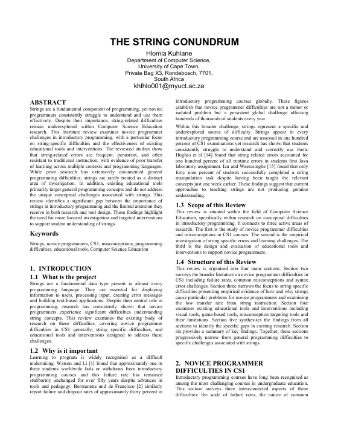
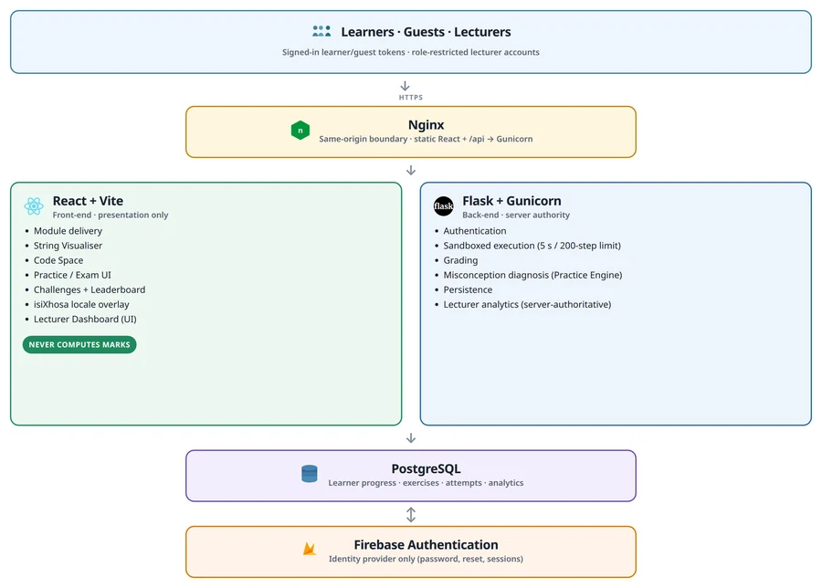
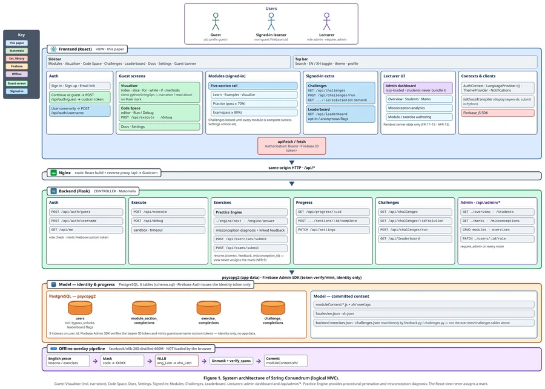
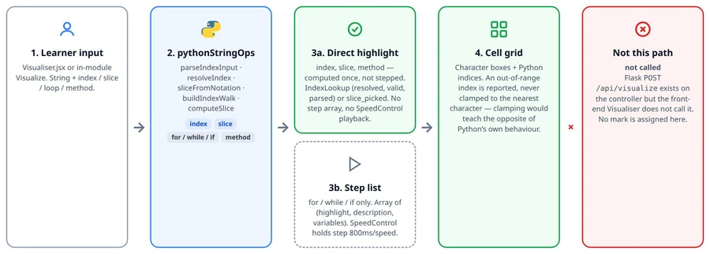
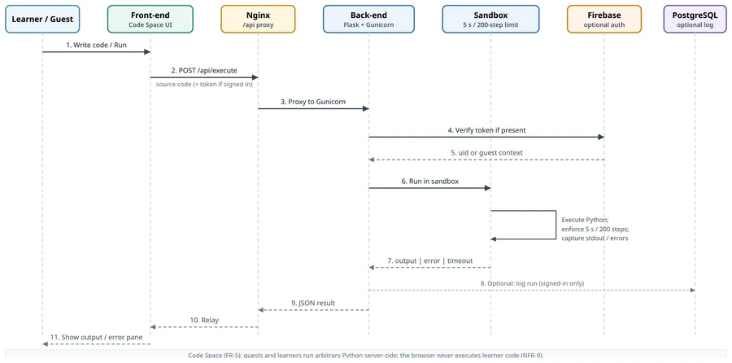
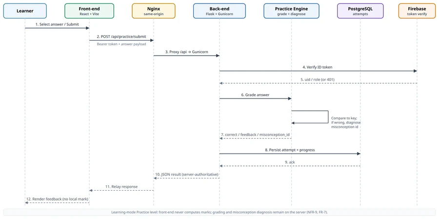
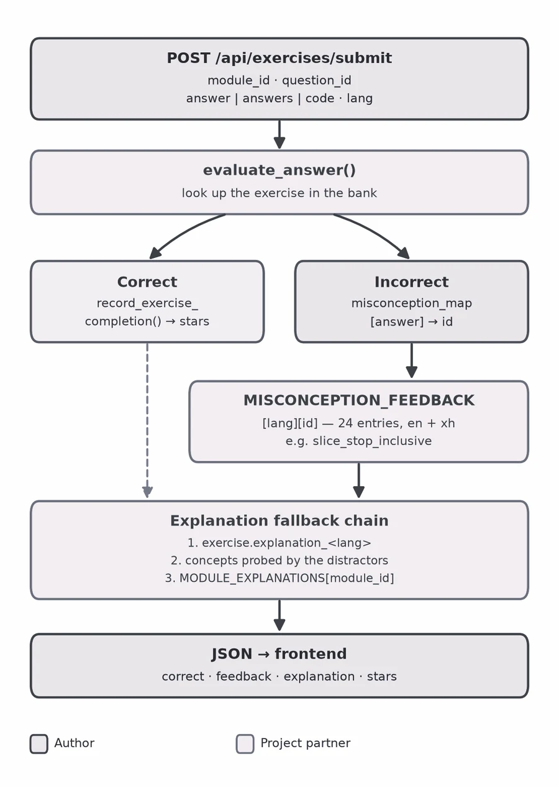
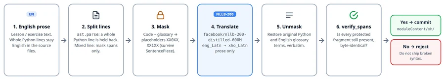
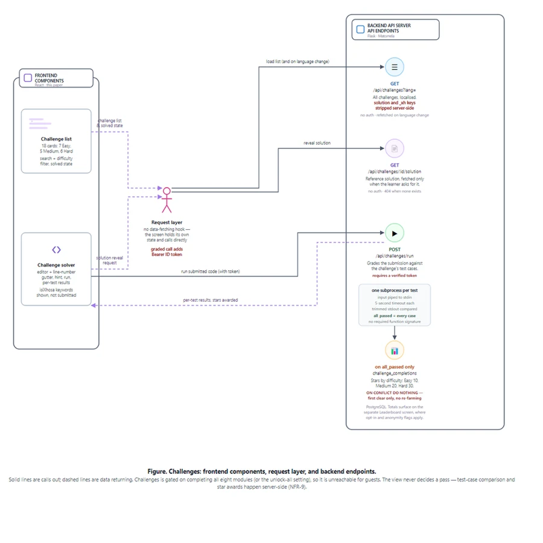
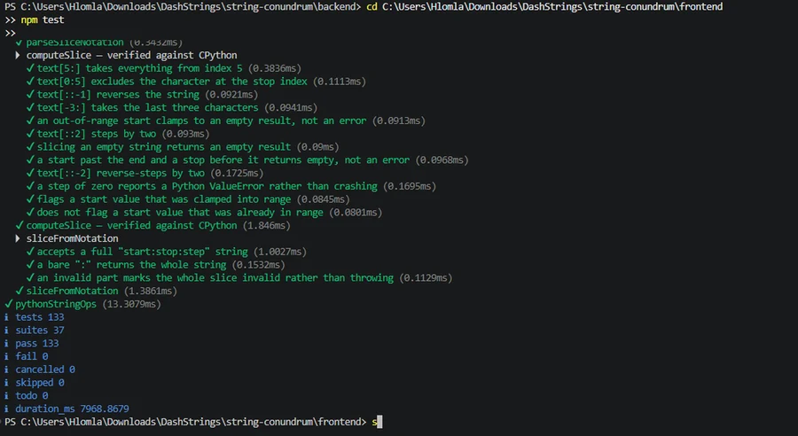

Literature review
Novice difficulties in CS1, string-specific evidence and why existing tools do not address it.
5Individual contribution · front end
The front end of String Conundrum, built through a misconception-driven design approach: a catalogue of 24 string misconceptions decides what the visualiser shows, how wrong answers are explained and how practice is delivered, in English and isiXhosa.
0Final paper
Novice programmers struggle to develop accurate mental models of Python strings, yet existing tools provide limited support for string-specific misconceptions. This paper presents String Conundrum, a web-based tutoring system built through a misconception-driven design approach. A catalogue of string misconceptions, derived from literature, curriculum, and tutoring experience, was used to derive requirements and guide the visualiser, feedback, and practice mechanisms. The system provides interpreter-verified visualisation, misconception-linked feedback, and isiXhosa pedagogical localisation that protects executable code from translation. Evaluation combined correctness testing, expert review, peer developer evaluation, user acceptance testing, and three target-user evaluation cycles (n = 11, 11, 13). Mean SUS scores ranged from 79.2 to 82.5, while applied knowledge results showed successful immediate application of several Python string concepts. The study does not establish long-term learning gains.
1Aims
So that a further module requires no rendering change. FR-1 NFR-8
Both reachable without an active module or an account, and resolving expressions consistently with the Python interpreter. FR-2 to FR-5
With feedback that names a tagged misconception where one applies, whatever the reading language. FR-6 to FR-8
Lesson content, prompts, hints and feedback through a pipeline where a new language needs only a locale bundle, translation falls back to English and code is never altered. FR-8 FR-10 NFR-8 NFR-10
Learner-controlled leaderboard participation and identity, and lecturer views that render server-supplied figures without treating unrecorded values as zero. FR-12 FR-17 to FR-19 NFR-13
2Approach
Requirements came from five complementary sources: the literature on string-learning difficulties; consultation with the project proposer, Aslam Safla; the CSC1015F syllabus and past examination papers from 2019 to 2025; an interface agreement with the back-end developer; and usability testing, which surfaced requirements that only appear in use. The misconception catalogue turned that evidence into a design vocabulary, and every entry had to produce an identifiable decision.
| Misconception | Design response |
|---|---|
slice_stop_inclusive | Explicit start and stop boundaries in the visualiser, with the stop position visibly excluded. |
negative_index_confusion | Positive and negative index rows shown simultaneously, rather than a textual note. |
count_vs_find_confusion | Feedback that names the relevant misconception instead of only reporting an incorrect answer. |
| Any wrong practice answer | Templates carry a misconception identifier, and a finer diagnostic check recomputes what a candidate misconception would produce and compares it with the learner's answer. |
A recurring principle: never present the absence of a result as a result
The visualiser reports a failed evaluation as an error rather than an empty selection a learner could mistake for an answer. Narration explains itself when a language is unsupported instead of silently switching off. Grading is always awaited, so a rejected submission is reported as a failure rather than quietly counted as wrong. And the lecturer dashboard distinguishes a value never recorded from a recorded zero. No single requirement demanded this; it emerged from treating an ambiguous interface state as a source of misconception in its own right, just like an ambiguous slice boundary.
3Requirements
Twelve functional requirements were specified up front. Cycle 1 added four for narration and error presentation (FR-13 to FR-16), and lecturer oversight added three more (FR-17 to FR-19). The non-functional requirements constrain the architecture rather than describe nice-to-haves.
| ID | Requirement | Acceptance condition |
|---|---|---|
| NFR-8 | Adding a new module or language should not require changes to existing components. | New content or locale data enters through existing data and dispatch structures. |
| NFR-9 | The front end should not grade or execute untrusted learner code for a mark. | No answer key or grading decision exists in the browser. |
| NFR-10 | No lesson field or interface string should render blank when its isiXhosa translation is missing. | An absent translation falls back to readable English. |
| NFR-12 | Visualiser state must reach assistive technology, and no information may depend on colour alone. | Slice bounds and state remain understandable through labels and accessible state. |
| NFR-13 | The front end must not compute a student's mark for lecturer display. | The dashboard renders back-end figures with no client-side aggregation. |
| ID | Requirement | Acceptance condition |
|---|---|---|
| FR-1 | Present string topics as learning modules with step-through worked examples, including indexing, slicing and immutability. | All eight modules present the specified staged content. |
| FR-2 | The visualiser displays a string as indexed characters and shows the effect of string operations. | Reference index and slice expressions reproduce Python's results. |
| FR-3 | The visualiser provides play, pause and speed controls. | Each control changes playback as intended. |
| FR-4 | The visualiser is usable independently of the modules, including by guests. | A guest can use the standalone visualiser. |
| FR-5 | Code Space lets learners write and run Python independently of the lessons, showing output and errors. | A guest receives the right output or error for valid and invalid code. |
| FR-6 | Each module includes graded practice exercises. | Each module exposes graded practice in the supported types. |
| FR-7 | Where a wrong answer maps to a known misconception, the system returns feedback for it. | A diagnosed misconception returns its explanation. |
| FR-8 | Lesson copy, interface text and feedback are available in English and isiXhosa. | Supported content renders in both locales. |
| FR-9 | Learners can switch language without losing their place. | Changing locale preserves the current task and position. |
| FR-10 | Snippets may show isiXhosa keywords, but code sent for execution or grading is Python. | Executable requests contain standard Python. |
| FR-11 | Guests may use the Visualiser, Code Space, Docs and Settings; Modules, Challenges and the leaderboard need an account. | Access restrictions match the specified feature set. |
| FR-12 | Signed-in learners get progress tracking, Challenges, a leaderboard and guidance. | Authenticated users reach these features. |
| FR-13 | Spoken narration describes each step, explains why the result follows and names any error and its cause. | Narration explains action and reason for success and failure. |
| FR-14 | Narration completes its sentence before the visualisation advances. | The next step waits for the utterance to finish. |
| FR-15 | Where narration is unavailable in a language, the limitation is explained rather than the control silently disabled. | An explicit limitation message appears. |
| FR-16 | The output area shows a distinct visual state for an error. | Error output is visually distinguishable. |
| FR-17 | A lecturer can view aggregate and per-student progress, marks and misconception frequency. | Only a lecturer-role account reaches these views. |
| FR-18 | A lecturer can create, edit, reorder and publish or hide modules and exercises. | Learner views reflect the changes; non-lecturers cannot make them. |
| FR-19 | Lecturer views distinguish a value not yet recorded from zero. | A student or module with no attempts renders as unrecorded. |
4Implementation
Presentation is separated from processing across a same-origin boundary enforced by Nginx. The front end owns presentation and interaction and never computes a mark; the back end owns authentication, execution and grading, and is the only component that reads answer keys and misconception mappings. A browser-delivered answer key would be inspectable by a learner.
The main technologies were chosen jointly by both developers: React for reusable stateful components (Angular was broader than needed), Vite for rapid iteration, Firebase Authentication rather than hand-built authentication, Flask rather than Django, and PostgreSQL rather than Firestore. For localisation, NLLB-200 was chosen because translation had to be a repeatable offline process.
Beyond the interface, this contribution includes the lecturer dashboard's back-end operations: role-restricted access, server-supplied analytics and persistence of module and exercise authoring.


A module is a content file registered against its identifier, with each block dispatched to a renderer by declared type, following the open–closed principle. Progress is recorded per stage rather than per exercise, which replaced an earlier rule that treated a module as complete only when every exercise had been answered correctly.
One rendering component and one slicing and indexing engine serve both the standalone visualiser and the module stage, across six modes. For slicing and indexing the engine resolves an expression in the browser and never calls the execution service or assigns a mark.
Because a visualiser that resolves a slice wrongly teaches precisely the misconception it exists to correct, it is verified against the Python interpreter rather than against its own reading of the rules. Narration uses the browser's speech synthesis, advances on completion of each utterance, and the visualiser now plays automatically when the Visualise stage opens.

Code Space is an independent execution surface, reachable without an account through the guest mechanism. Submitted code is sandboxed by the back end with a five-second limit and a 200-step tracer cap; Code Space returns output only and performs no grading, unlike Practice and Exam, which evaluate against a server-held answer key.
A transpile control converts the editor into isiXhosa keyword form with a confirmation banner, and the visualiser pane states the scope of what it traces, so a learner never reads an empty pane as evidence that their code cannot be visualised.

Examination draws on a fixed bank of 276 questions; practice is generated across all eight modules from templates and randomly chosen words. Both share one schema, submission path and set of misconception identifiers, so equivalent errors in generated and hand-written questions receive the same explanation.
A worked-example panel accompanies right and wrong answers, using the visualiser's character-cell highlighting to show the rule and a contrasting case. The browser keeps a running tally of diagnosed misconceptions and sends it with each request, so the next questions weight toward demonstrated weak points.

The active locale persists in browser storage, is inferred from the browser's language when unset, and is applied to the document's language attribute for assistive technology. A language control appears before sign-in, because a learner who reads isiXhosa needs the interface in isiXhosa before holding an account. Interface strings resolve through a dotted-key lookup that falls back to English and then to the key itself; module content resolves through a deep merge of the isiXhosa overlay over the English base, merging arrays by position so an overlay can translate part of a section.
Natural-language content is translated ahead of time and committed, so no translation model runs on any request. A line that parses as valid Python is held back from translation, code fragments in prose are masked, and a verification pass rejects any translation that alters a protected fragment, falling back to English for that segment. Runtime machine translation was rejected because it would put a service on the interaction path, and runtime large-language-model translation because non-deterministic output would make reviewed text unstable.


Challenges present 18 problems with difficulty bands, hints, worked solutions and tests, evaluated through the same execution service as Code Space and given a line-number gutter after Cycle 1. Leaderboard participation and display identity are separate learner settings, and the leaderboard's identity comes from authenticated server data rather than a browser-controlled field. The lecturer dashboard has six areas (Overview, Students, Marks, Analytics, Modules and Content), separates read-oriented oversight from authoring, and is hidden from learner navigation entirely.

5Testing
| Area | Tests | Passed |
|---|---|---|
| Shared practice and exam helpers | 25 | 25 |
| Account credential validation | 24 | 24 |
| Module stage sequence and gating | 20 | 20 |
| isiXhosa content merge | 16 | 16 |
| Password policy | 15 | 15 |
| Syntax highlighting | 12 | 12 |
| String slice and index engine | 11 | 11 |
| isiXhosa keyword transpiler | 10 | 10 |
| Total | 133 | 133 |
The engine tests are not based only on values derived from the implementation. A reference set of 132 slice and 60 index expressions was evaluated by the Python interpreter, and the suite checks that the visualiser reproduces those results, which reduces the risk that the implementation and its tests share the same mistaken reading of Python.
Further tests check properties the design depends on: a slice excludes its stop position; negative indices count from the end; an out-of-range index is an error while out-of-range slice bounds are clamped; a step of zero produces Python's own ValueError; untranslated fields fall back to English; and module progression depends on the exam rather than on practice.
Stated as known gaps rather than later discoveries: rendering is not exercised by the suite, and the browser-side weak-point tally has no automated test.

6Iteration
Evaluation changed the artefact, and every change is traceable to the finding that prompted it. The largest was spoken narration, requested independently by two Cycle 1 participants, once for audio learners and once on behalf of blind users; the second largest replaced the fixed practice bank with the generated Practice Engine.
7Results
Mean SUS stayed close to 80 in all three cycles despite changes in population and setting. Applied knowledge was strong on several concepts: in Cycle 2, indexing, slicing and comparison each reached 100% fully correct, and in Cycle 3, 11 of 13 participants correctly identified that upper() leaves the original string unchanged. Immutability was lower, with 5 of 11, 7 of 11 and 8 of 13 fully correct across the cycles. Seven participants across all three cycles produced the fabricated result “Jython”.
The method item was added in Cycle 3. Immutability counts only fully correct answers; 24 of 35 said the assignment fails.
| Concept | Cycle 1 | Cycle 2 | Cycle 3 | Pooled |
|---|---|---|---|---|
| Indexing | 10/11 | 11/11 | 12/13 | 33/35 (94%) |
| Comparison | 11/11 | 11/11 | 10/13 | 32/35 (91%) |
| Slicing | 9/11 | 11/11 | 10/13 | 30/35 (86%) |
| Immutability (fully correct) | 5/11 | 7/11 | 8/13 | 20/35 (57%) |
| Method does not mutate | – | – | 11/13 | 11/13 (85%) |
| Feature | Participants |
|---|---|
| Visualiser | 5 of 13 |
| Practice questions | 3 of 13 |
| Feedback and explanations | 2 of 13 |
| Challenges | 2 of 13 |
| Code Space | 1 of 13 |
In Cycle 3, index and slice highlighting received the highest feature rating (4.69 of 5), followed by the visualiser and misconception-linked feedback (both 4.46). The isiXhosa support was perceived as valuable by some participants (helpfulness 3.00, 3.90 and 3.70 across cycles), while comments about terminology reinforce the need for independent language review. Technical correctness of the localisation pipeline and linguistic quality of the translations are separate questions. The full shared evaluation is on the results page.
8Conclusions
The main contribution is a tested educational software design approach that connects identified string misconceptions to visualisation, feedback, practice generation and localisation, together with a localisation pipeline that preserves executable code while extending the teaching to isiXhosa. The completed system combines eight modules, an interpreter-verified visualiser, Code Space, misconception-linked feedback, procedural practice, isiXhosa instructional localisation, Challenges, a learner-controlled leaderboard and lecturer-facing functionality.
The study does not establish long-term learning gains: participants used only part of the system in short sessions. Future work should evaluate more modules over longer periods with matched pre- and post-tests, review the isiXhosa content independently, continue refining the exam bank, add component and end-to-end rendering tests, and evaluate alternative speech solutions so narration can reach isiXhosa.
9Literature review
The review moves from novice difficulties in CS1 in general, through string-specific evidence, to the tools built to help. It finds string-related errors frequent, persistent and resistant to traditional instruction, with poor transfer across contexts and languages, and it identifies six gaps:

Novice difficulties in CS1, string-specific evidence and why existing tools do not address it.
10Citation
@techreport{kuhlane2026stringconundrum,
author = {Hlomla Kuhlane},
title = {Front-End Design of String Conundrum: A Visual,
Misconception-Targeted, and isiXhosa-Localised
Tutor for Novice Programmers Learning Python
Strings},
type = {Honours project paper},
institution = {Department of Computer Science,
University of Cape Town},
address = {Cape Town, South Africa},
year = {2026}
}